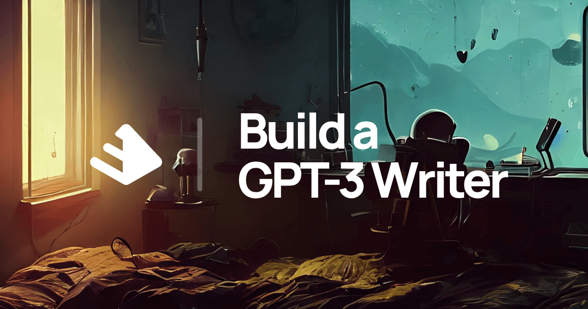

My Projects
-
IN PROGRESS: Build a GPT-3 Writer
Description: A project (laid out in buildspace) that culminates with creating a chrome extension to use a custom GPT-3 writer.
 -
IN PROGRESS: Python Automation Scripts
Description: A collection of Python scripts for tasks like: cleaning up storage,parsing CSV, PDF and Word documents, web scraping. Inspired by the Book: Automate the Boring Stuff With Python (Al Swigart).